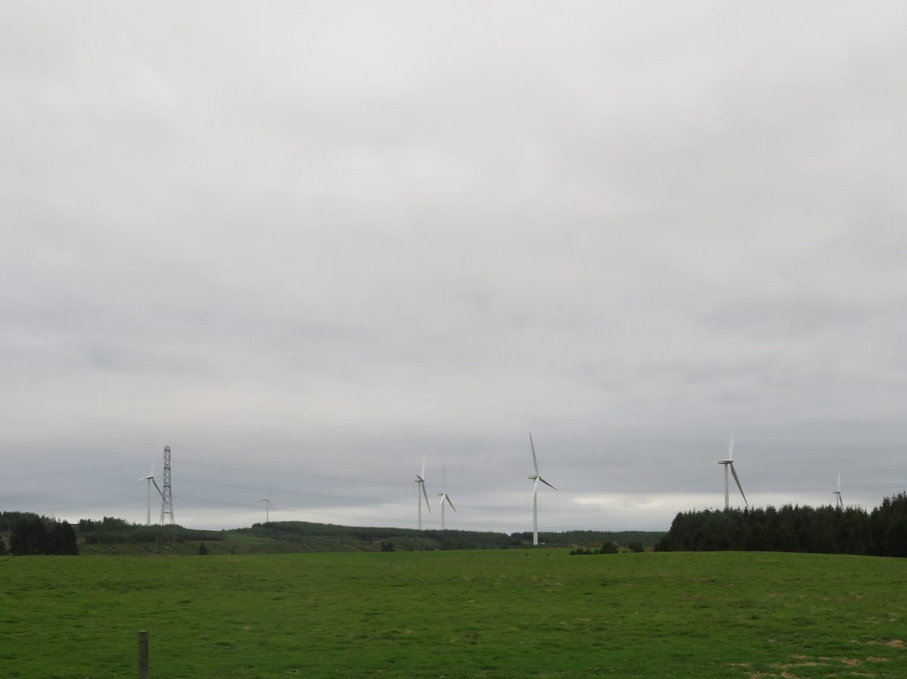

스코틀랜드 공공소유 보고서 "권한만으론 부족"…공공 토지 위 사업·풍력 리파워링에 지역 지분 조건 붙이라고 권고

영국 지역경제전략센터(CLES) 10월 26일 공개…사우스래너크셔는 학교·체육시설 태양광 3,035kWp 전기요금 절감액을 다음 설치에 재투자, 하일랜드는 버스 직영으로 연 170만 파운드 넘게 절감…스코트윈드 수입 투입도 제안
영국 지역경제전략센터(CLES)가 스코틀랜드의 버스·에너지·주택 에너지 개보수를 공공이 직접 소유하고 운영하기 위한 실행 로드맵을 10월 26일 내놓고, 공공 토지 위에 세우는 발전 사업과 기존 풍력단지의 리파워링(설비 교체)에 지역 지분 조건을 붙이라고 권고했다. 노조·환경단체 연합인 정의로운전환파트너십(JTP)의 의뢰로 만든 이 보고서는 정책보고서와 지자체용 실행 도구로 이뤄졌으며, 스코틀랜드 지역공동체 부 구축(CWB)법의 모든 조항이 10월 1일 시행에 들어간 직후에 나왔다. 보고서는 지자체가 2019년 교통법으로 버스를 직접 운영할 권한을 되찾고도 돈과 사람, 뒷받침 정책이 모자라 '역량 없는 권한'에 머물러 있다고 진단하고, 단발 사업 위주의 지원과 공공 편익을 낮게 매기는 사업성 검토, 영국 정부가 쥔 전력시장·버스 면허 제도를 걸림돌로 꼽았다. 공공이 직접 해 낸 사례로는 사우스래너크셔가 자체 전기 인력으로 학교와 체육시설에 태양광 모두 3,035kWp를 설치하고 아낀 전기요금을 다음 설치에 다시 넣은 일, 하일랜드가 버스를 직영해 이전 입찰가보다 해마다 170만 파운드 넘게 아낀 일을 들었다. 권고에는 공공소유·실행 지원단 신설, 스코틀랜드 국가투자은행의 지자체 직접 투자 허용, 해상풍력 개발권 임대 사업인 스코트윈드(ScotWind) 수입을 에너지·교통 공공소유에 쓰는 방안, CWB 법정 지침의 중심에 소유 구조 전환을 두는 방안이 함께 담겼고, 육상풍력단지 105곳의 세후이익 28억3,000만 파운드 가운데 약 90%가 기업 주주 배당으로 나갔다는 분석도 같은 보고서에 실렸다. 이 보고서를 울산에 비춰 본 지역 언론의 분석 기사는 부유식 해상풍력이 공유수면을 쓰는 사업인 만큼 계획입지와 사업자 선정 제도를 설계할 때 지역 지분 참여와 수익 재투자를 검토할 수 있다고 제언하면서도, 스코틀랜드의 배당 비율을 그대로 대입하기보다 개별 사업의 지분·금융 구조와 지역 조달 계획부터 확인해야 한다고 덧붙였다.
시민에너지 관점
사우스래너크셔가 학교와 체육시설에 올린 태양광 3,035kWp는 큰 발전소가 아니지만, 아낀 전기요금이 다음 설비가 되는 순환이 공공의 자산을 해마다 늘린다는 점을 보여 준다. 공공이 직접 사업을 맡으면 비용이 더 든다는 걱정이 따르지만, 같은 보고서에서 하일랜드는 버스 직영으로 오히려 한 해 170만 파운드 넘게 아꼈다. 바다와 공공 토지는 모두의 자원인 만큼 그 위에 서는 발전소에 지역 지분 조건을 붙여야 이익이 배당으로 흩어지지 않고 주민과 지자체의 자산으로 쌓인다. 울산 부유식 해상풍력도 사업자 선정 기준이 굳어지기 전에 주민·지자체 지분과 수익 재투자 몫을 제도에 먼저 담아야 한다.
출처: 울산저널i 2026-10-31 이종호 원문 보기
スコットランドの公有化報告書「権限だけでは足りない」…公有地上の事業と風力リパワリングに地域持ち分の条件を付けるよう勧告
英国の地域経済戦略センター（CLES）が10月26日に公表…サウスラナークシャーは学校・体育施設の太陽光3,035kWpで浮いた電気代を次の設置に再投資、ハイランドはバス直営で年170万ポンド超を節減…スコットウィンドの収入投入も提案
英国の地域経済戦略センター（CLES）は10月26日、スコットランドのバス・エネルギー・住宅のエネルギー改修を公共が直接所有し運営するための実行ロードマップを公表し、公有地の上に建てる発電事業と既存の風力発電所のリパワリング（設備更新）に地域持ち分の条件を付けるよう勧告した。労働組合・環境団体の連合「公正な移行パートナーシップ（JTP）」の委託でまとめたこの報告書は、政策報告書と自治体向けの実行ツールで構成され、スコットランドの「地域共同体の富の構築（CWB）法」の全条項が10月1日に施行段階に入った直後に出た。報告書は、自治体が2019年の交通法でバスを直営する権限を取り戻しながら、資金や人材、支える政策が足りず「能力なき権限」にとどまっていると診断し、単発事業中心の支援、公共の便益を低く見積もる事業性評価、英国政府が握る電力市場とバス免許制度を障害に挙げた。公共が自ら成し遂げた事例としては、サウスラナークシャーが自前の電気技術者を使って学校と体育施設に計3,035kWpの太陽光を設置し、浮いた電気代を次の設置に回したこと、ハイランドがバスを直営して以前の入札額より年170万ポンド以上を節減したことを挙げた。勧告には、公有化・実行支援チームの新設、スコットランド国立投資銀行による自治体への直接投資の容認、洋上風力の開発権リース事業スコットウィンド（ScotWind）の収入をエネルギー・交通の公有化に充てる案、CWB法の法定指針の中心に所有構造の転換を据える案も盛り込まれ、陸上風力発電所105カ所の税引き後利益28億3,000万ポンドのうち約90％が企業株主への配当に回ったという分析も同じ報告書に載っている。この報告書を蔚山に照らした地元メディアの分析記事は、浮体式洋上風力は公有水面を使う事業であるため、計画立地と事業者選定の制度を設計する際に地域の持ち分参加と収益の再投資を検討できると提言しつつ、スコットランドの配当比率をそのまま当てはめるより、個別事業の持ち分・金融構造と地域調達計画をまず確認すべきだと付け加えた。
市民エネルギーの視点
サウスラナークシャーが学校と体育施設に載せた太陽光3,035kWpは大きな発電所ではないが、浮いた電気代が次の設備になる循環が公共の資産を年々増やすことを示している。公共が直接事業を担えば費用がかさむとの懸念もあるが、同じ報告書でハイランドはバスの直営でむしろ年170万ポンド以上を節減した。海と公有地はみんなの資源である以上、その上に建つ発電所に地域持ち分の条件を付けてこそ、利益が配当として散らばらず住民と自治体の資産として積み上がる。蔚山の浮体式洋上風力も、事業者選定の基準が固まる前に、住民・自治体の持ち分と収益再投資の取り分をまず制度に盛り込むべきだ。
出典: 蔚山ジャーナルi 2026-10-31 イ・ジョンホ 原文を読む
苏格兰公有制报告称"仅有权力还不够"…建议对公共土地上的项目和风电改造附加地方持股条件
英国地方经济战略中心（CLES）10月26日发布…南拉纳克郡把学校和体育设施3,035kWp光伏节省的电费再投入下一批安装，高地议会以公交直营每年节省170万英镑以上…还建议投入ScotWind收入
英国地方经济战略中心（CLES）10月26日发布了让公共部门直接拥有并运营苏格兰公交、能源和住宅节能改造的实施路线图，建议对建在公共土地上的发电项目和现有风电场的改造（更换设备）附加地方持股条件。这份报告受工会与环保团体联盟"公正转型伙伴关系（JTP）"委托完成，由政策报告和面向地方政府的实施工具组成，发布时间恰在苏格兰《社区财富建设（CWB）法》全部条款于10月1日进入实施阶段之后。报告诊断称，地方政府虽然依据2019年交通法取回了直接经营公交的权力，却因资金、人手和配套政策不足而停留在"没有能力的权力"，并把以一次性项目为主的支持、低估公共效益的可行性评估，以及由英国中央政府掌管的电力市场和公交牌照制度列为障碍。在公共部门亲自做成的案例中，报告举出南拉纳克郡利用自有电工在学校和体育设施共安装3,035kWp光伏，并把节省的电费投入下一批安装；高地议会直营公交后，每年比此前的招标价节省170万英镑以上。建议还包括新设公有制与实施支援团、允许苏格兰国家投资银行直接投资地方政府、把海上风电开发权租赁项目ScotWind的收入用于能源和交通公有制，以及把所有权结构转型置于CWB法定指引的核心；同一报告还分析指出，105座陆上风电场28.3亿英镑税后利润中约90%作为企业股东分红支付。一篇把这份报告与蔚山对照的韩国地方媒体分析文章提出，浮式海上风电利用公有水面，因此在设计规划选址和开发商遴选制度时可以考虑地方持股参与和收益再投资，同时补充说，与其照搬苏格兰的分红比例，不如先核实各项目的股权、融资结构和本地采购计划。
市民能源视角
南拉纳克郡在学校和体育设施上安装的3,035kWp光伏并非大型电站，却表明省下的电费变成下一批设备的循环，能让公共资产逐年增加。有人担心由公共部门直接经营会增加成本，但在同一份报告中，高地议会直营公交反而每年节省了170万英镑以上。大海和公共土地是全体的资源，只有给建在其上的电站附加地方持股条件，收益才不会以分红形式流散，而是作为居民和地方政府的资产积累下来。蔚山的浮式海上风电也应在开发商遴选标准定型之前，先把居民和地方政府的持股以及收益再投资的份额写进制度。
来源: 蔚山Journal i 2026-10-31 Lee Jong-ho 查看原文
Scottish public ownership report says "powers alone are not enough" and urges local ownership conditions on projects on public land and on wind farm repowering
The Centre for Local Economic Strategies (CLES) published it on October 26; South Lanarkshire reinvested savings from 3,035kWp of solar on schools and sports facilities, Highland saved more than £1.7 million a year by running buses in-house, and the report also proposes using ScotWind revenue
The Centre for Local Economic Strategies (CLES) on October 26 released a roadmap for bringing Scotland's buses, energy and home energy retrofits into direct public ownership and operation, recommending that local ownership conditions be attached to generation projects on public land and to the repowering of existing wind farms. Commissioned by the Just Transition Partnership (JTP), a coalition of unions and environmental groups, the work comprises a policy report and a toolkit for councils, and came out just after all provisions of Scotland's Community Wealth Building (CWB) Act entered into force on October 1. The report diagnoses "powers without capacity": councils regained the power to run buses directly under the 2019 Transport Act but lack the money, staff and supporting policy to use it, and it names one-off project funding, business cases that undervalue public benefit, and the electricity market and bus licensing rules controlled by the UK government as obstacles. As examples of what the public sector has achieved itself, it cites South Lanarkshire, which used its own electricians to install a total of 3,035kWp of solar on schools and sports facilities and put the electricity bill savings into the next installations, and Highland, which saved more than £1.7 million a year compared with previous tender prices by running buses in-house. The recommendations include a new public ownership and delivery support unit, allowing the Scottish National Investment Bank to invest directly in councils, using revenue from ScotWind, the offshore wind seabed leasing round, for public ownership in energy and transport, and putting a shift in ownership at the centre of the CWB statutory guidance; the same report also found that about 90% of £2.83 billion in post-tax profits at 105 onshore wind farms was paid out as dividends to corporate shareholders. A Korean local media analysis that read the report against Ulsan's situation suggested that, because floating offshore wind uses public waters, local equity participation and reinvestment of returns could be considered when designing planned siting and developer selection, while adding that individual projects' ownership, financing structures and local procurement plans should be checked first rather than applying Scotland's dividend ratio directly.
Citizen Energy View
The 3,035kWp of solar South Lanarkshire put on schools and sports facilities is not a large power plant, but it shows how a cycle in which saved electricity bills become the next installation can grow public assets year after year. There is a worry that public delivery costs more, yet in the same report Highland actually saved more than £1.7 million a year by running its buses in-house. Because the sea and public land belong to everyone, only by attaching local ownership conditions to the power plants built on them will the profits stop scattering as dividends and instead accumulate as assets for residents and councils. Ulsan's floating offshore wind should likewise write resident and council stakes and a share for reinvestment into the rules before the developer selection criteria are set.
Source: Ulsan Journal i 2026-10-31 Lee Jong-ho Read the original